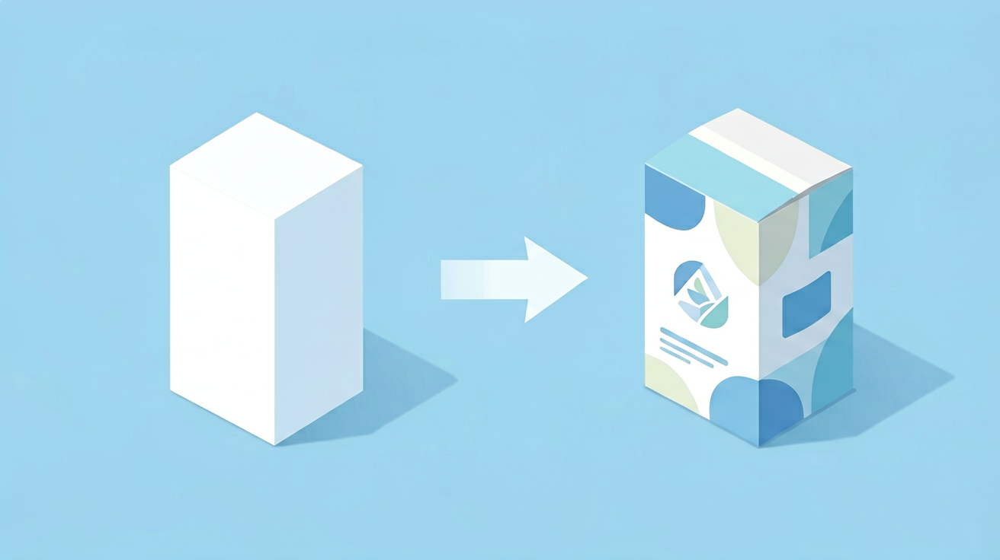
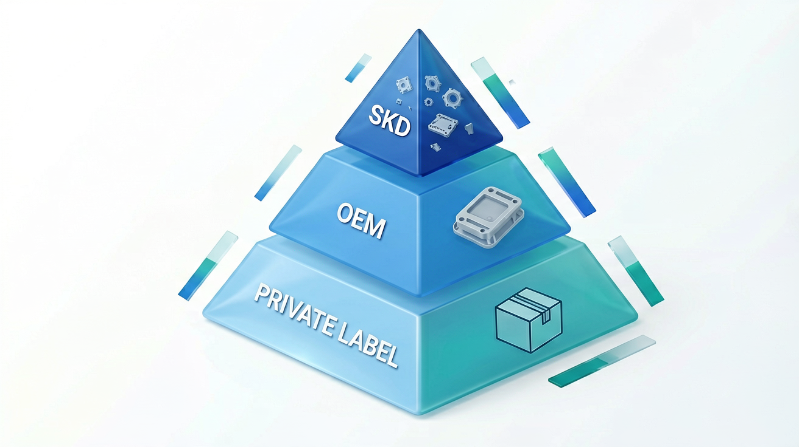
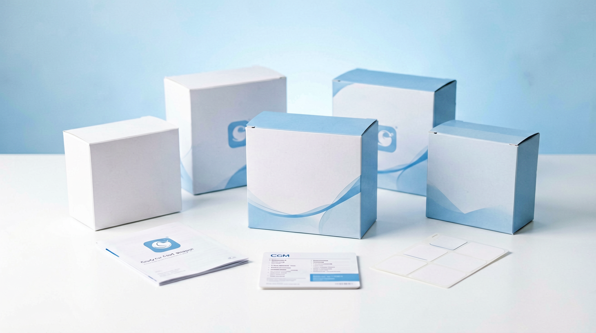
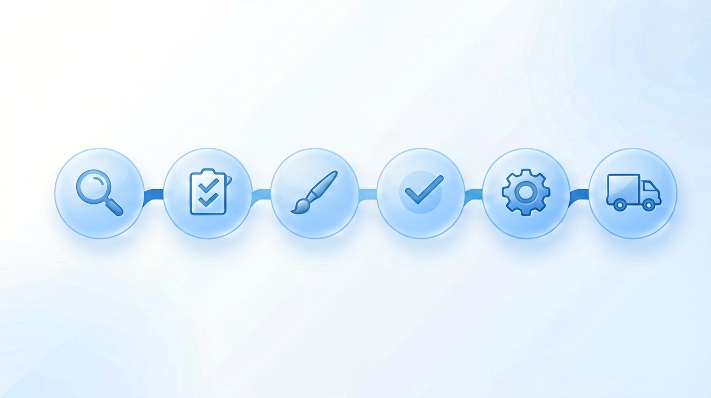

Say you run a metabolic health brand. Loyal customers, a solid supplement line, and now you want to put a CGM on your product page. So you call three manufacturers. Two of them quote MOQs in the hundreds of thousands of units. One tells you to expect over a year before you see a finished product. You hang up and think: maybe owning a CGM brand just isn't realistic unless you're Abbott or Dexcom.
Here's the thing: it is realistic, and the path is a lot shorter than you'd think. Most people searching for private label CGM options aren't first-timers looking for a business idea. They're medical device distributors sizing up a new category, diabetes and metabolic health brands who want their own hardware line, importers who already move health products but not devices yet, pharmacy companies rounding out a chronic disease portfolio, and investors kicking the tires on the CGM market before they write a check. Strip away the details and everyone's really asking the same thing: how do I get a CGM brand to market without burning millions of dollars and years of my life building a sensor platform from scratch? That's what this guide walks through.

What is a private label CGM?
To put it simply, a private label CGM is a complete system — the sensor, the transmitter, the app — that a manufacturer already designed, validated, and put into production. You put your brand on it and sell it as yours. The manufacturer keeps ownership of the platform and the regulatory paperwork behind it. You own everything the customer actually sees and feels: the name on the box, the packaging, the app they open every day, the marketing around the whole thing.
That's a completely different game from inventing a CGM yourself, which usually means years of biosensor R&D, clinical trials, and a regulatory submission built from nothing. Private label skips all of them. You're not proving if the glucose-sensing technology works — someone already did that. Instead, your job is only making the product look and feel like its yours.
Why more companies are going private label
The global market for continuous glucose monitoring is expanding rapidly. According to market data from firms like Grand View Research and Fortune Business Insights, the global CGM market size surpassed $8 billion recently and is projected to maintain a compound annual growth rate (CAGR) of over 15% through the turn of the decade. This growth is driven by expanding clinical adoption for type 1 and type 2 diabetes, alongside a massive new wave of consumer demand for metabolic health, longevity, and athletic performance optimization.
Here is what is driving the shift toward private label:
- Accelerated speed to market: Developing a native CGM from scratch typically takes 3 to 5 years from initial bench testing through clinical validation and regulatory clearance. A private label approach compresses this timeline to months.
- Massive capital efficiency: You eliminate the need to fund internal biosensor laboratories, recruit specialized cleanroom engineers, or purchase expensive automated micro-assembly lines. Capital stays liquid and can be deployed toward customer acquisition and marketing.
- De-risked technology assets: Technical failure rates in early-stage medical hardware development are high. By adopting an existing platform, you inherit a product that has already proven its accuracy, manufacturing consistency, and safety profile across thousands of real-world patient days.
- Strategic focus: Your team does not get bogged down in technical troubleshooting or raw material supply chain snarls. You focus entirely on onboarding clinics, optimizing digital marketing funnels, and managing distribution logistics.
Generally speaking, it just lets you stay in your lane. If you've built your business on marketing, community, and distribution, you don't need to suddenly become a biosensor engineering company to get into CGM. You keep doing what you're good at, and you get a compliant, working product to sell.

Private label vs. OEM vs. SKD: What is the difference
When exploring manufacturing partnerships, you will encounter three primary terms: Private Label, OEM, and SKD. It is vital to understand that these are not merely different names for the same service; they represent completely different operational and regulatory commitments.
1. Private label (white label)
This is the fastest, lowest-barrier entry point available. You utilize the manufacturer's existing, fully realized product line — including the physical sensor casing, transmitter electronics, and standard app layout. The manufacturer applies your logo to the hardware, customizes the packaging graphics, and pushes your branded version of the app to the app stores. It is ideal for rapid market entry and agile validation.
2. OEM (Original equipment manufacturer)
An OEM partnership represents a deeper tier of technical collaboration. While you still utilize the manufacturer's underlying, validated biosensor technology and chip architecture, you introduce custom modifications. This might include a unique physical shape for the sensor housing, a customized transmitter enclosure, or specific hardware-level feature adjustments. Because it requires custom molding, engineering hours, and potentially updated design verification testing, it demands higher upfront investment and a longer timeline than standard private labeling. Learn more about OEM partnerships.
3. SKD (Semi-knocked-down)
Semi-knocked-down means the manufacturer ships you components (such as the functional biosensor elements or PCBA electronic boards) for local assembly in your own market. This model only makes sense once you've already proven demand and you're ready to commit to serious, sustained volume for the long haul, because local assembly and the inventory it requires only pays off at scale. Also, your manufacturer doesn't need to hold the CE mark or registration for your specific market. Instead, they supply you with complete technical documentation to help you file for local medical registration. Read our full SKD guide.
If you are validating a new market, launching a pilot program, or looking to get a brand off the ground with minimal capital friction, stick to Private Label or light OEM. If you are an established player with an existing local assembly infrastructure, looking to win large-scale government tenders that mandate domestic production, only then should you consider the SKD pathway.

Who actually uses the private label model?
- Medical device distributors and regional agents: Companies that already have deep relationships with hospital networks, pharmacies, and endocrinology clinics, allowing them to instantly monetize their existing sales channels.
- Diabetes care and digital health brands: Existing brands offering test strips, blood glucose meters (BGMs), or digital coaching services that want to modernize their product portfolio and increase user retention.
- Pharmaceutical companies: Drug manufacturers looking to package continuous glucose monitoring alongside therapeutic regimens to create unified digital therapies that improve patient compliance and clinical outcomes.
- Telehealth and remote patient monitoring (RPM) platforms: Modern clinics and health-tech startups that use real-time glucose data to power personalized nutrition, weight loss, or metabolic health programs.
- Large hospital networks and procurement groups: High-volume healthcare providers looking to reduce systemic procurement costs by introducing a high-quality, reliable house-branded CGM across their facilities.
What can you actually customize?
A common misconception is that private labeling forces you into a generic, rigid product. In reality, a mature manufacturing partner can customize a wide range of touchpoints.
- Visual and structural packaging: Complete control over external box design, branded user manuals, and warning labels.
- Hardware identity: Branded logos on the sensor inserter and transmitter body.
- Software ecosystem and UI/UX: Full app localization with brand colors, typography, and language strings.
- Clinical configurations: Fine-tuning alert thresholds, notifications, and data-sharing intervals.
- Enterprise integrations: API and SDK for EHR connectivity and cloud data pipelines.
Explore our white-label patient app capabilities.

How the CGM private label process actually works
Phase 1: alignment and regulatory discovery
The project begins by mapping out your target geographic markets, identifying the required local medical device classifications, and assessing the volume expectations for the initial launch phases.
Phase 2: configuration and selection
You review the manufacturer's underlying technology portfolio to choose your baseline hardware features (e.g., sensor wear duration, calibration requirements) and establish the software integration scope.
Phase 3: brand integration and asset design
Your design team works alongside the manufacturer's engineering team to finalize packaging die-lines, insert text, regulatory labels, and the localized asset files for the iOS and Android applications.
Phase 4: evaluation and sample sign-off
The manufacturer produces a run of physical, branded engineering samples and provides the accompanying technical documentation files. Your team evaluates the physical kit and signs off on the final golden sample.
Phase 5: production and quality assurance
The order moves into mass manufacturing inside a certified, cleanroom medical facility operating under strict ISO 13485 quality management guidelines. Every batch undergoes rigorous electrochemical and wireless performance validation.
Phase 6: fulfillment and logistics
Finished, sterile, retail-ready products are packed, cleared through export quality gates, and shipped to your designated regional fulfillment centers or distribution hubs.

How to choose the right private label CGM manufacturer
Your manufacturing partner is the literal lifeblood of your brand. When vetting potential suppliers, move past basic price sheets and judge them on these critical technical and operational pillars:
Clinical accuracy (MARD)
The gold standard metric for CGM accuracy is MARD (Mean Absolute Relative Difference). It measures the average percentage deviation between the CGM reading and a laboratory reference glucose value. Lower numbers are superior. A reliable, clinically viable CGM platform should consistently demonstrate a MARD below 9%. Demand to see peer-reviewed clinical trial data or formal evaluation reports.
Manufacturing stability & capacity
An interrupted supply chain can destroy a consumer brand overnight. Audit the manufacturer's cleanroom classifications, their daily production capacity, and their component sourcing agreements. Ensure they have the scaling capacity to support your brand when your sales volume triples.
Regulatory documentation depth
Can the manufacturer provide a complete, well-organized technical file? Look for a partner who can hand you complete ISO 13485 certificates, comprehensive biocompatibility data, sterilization validation reports, and robust software verification files. If their documentation is sparse, your local regulatory approval process will become a lengthy nightmare.
Long-term R&D commitment
The CGM landscape changes rapidly. You do not want to partner with a manufacturer whose technology will be obsolete in two years. Choose a partner with an active internal R&D roadmap who is consistently innovating in longer sensor wear times, smaller form factors, multi-analyte tracking (e.g., lactate or ketones), and advanced algorithmic accuracy.
Why partner with EverChek for your private label CGM
At EverChek, we provide a streamlined, deeply reliable turnkey solution designed to take your brand from concept to commercial launch with absolute confidence.
- Clinically validated accuracy: The EverChek CGM platform is built upon advanced, proven electrochemical biosensor technology, delivering under 8% MARD performance metrics that meet the strictest international clinical standards.
- Agile, multi-tier cooperation: Whether you need a rapid, cost-effective Private Label rollout to validate a market, a customized OEM design to differentiate your brand, or a highly structured SKD industrial component delivery framework for domestic assembly, our teams adapt completely to your operational model.
- End-to-end customization depth: We do not just paste logos. We offer deeply integrated localization across retail packaging, local language documentation, customized alert logic, and complete, production-ready white-label mobile app frameworks.
- Advanced scale and stability: Our state-of-the-art, ISO 13485-certified manufacturing facilities utilize advanced automation to guarantee stable lead times, rigorous quality control, and the continuous volume scalability your business demands.
- Uncompromising regulatory support: We provide our global partners with deeply professional documentation packages, technical data transfers, and dedicated engineering consultation to ensure your local regulatory approval process moves forward smoothly and efficiently.
If you are weighing private label against OEM or SKD for your specific market and volume, just tell us where you are at. We will walk through it with you directly. Contact our team today.
Frequently asked questions
What is a private label CGM?
A private label CGM is an arrangement where a certified medical manufacturer builds a fully validated continuous glucose monitoring system, and you sell it under your own company's brand name, packaging, and custom application interface.
Is private label different from OEM?
Yes. Private label utilizes the manufacturer's existing hardware shape and internal components, focusing customization on branding, packaging, and software styling. OEM allows you to introduce custom industrial designs, unique physical enclosures, or proprietary hardware features built on top of the manufacturer's core biosensor platform.
Can I legally sell a CGM under my own brand name?
Absolutely. This is a standard global commercial practice in the medical device industry. However, your business entity must comply with your local country's health regulations, which typically involves registering your brand as the legal distributor or marketer of the device backed by the manufacturers technical files.
Do I need to develop or manufacture my own sensor?
No. Your manufacturing partner handles all of the complex electrochemistry, sterile cleanroom production, automated micro-assembly, and clinical validation trials.
Can I customize the mobile app user interface and features?
Yes. You can customize the visual branding, color themes, logo placements, language translations, and default glucose alert thresholds. Advanced API integrations are also available to link data streams directly into your own software platforms.
What specific medical certifications should I look for?
At a baseline, ensure your manufacturing partner holds a valid ISO 13485 certification for medical device quality management systems. Depending on your target market, you should look for existing CE marks, local regulatory approvals, and comprehensive biocompatibility and sterilization reports.
Can early-stage startups successfully launch a private label CGM?
Yes, provided they have an established user acquisition strategy, clinical onboarding channels, or a unique software value proposition (like a specialized metabolic coaching app) that leverages the hardware data.
How do I evaluate and choose the right manufacturing partner?
Prioritize clinical accuracy metrics (MARD data under 9%), a verified track record of manufacturing consistency, the depth and organization of their regulatory technical files, and their willingness to provide long-term technical and software support.